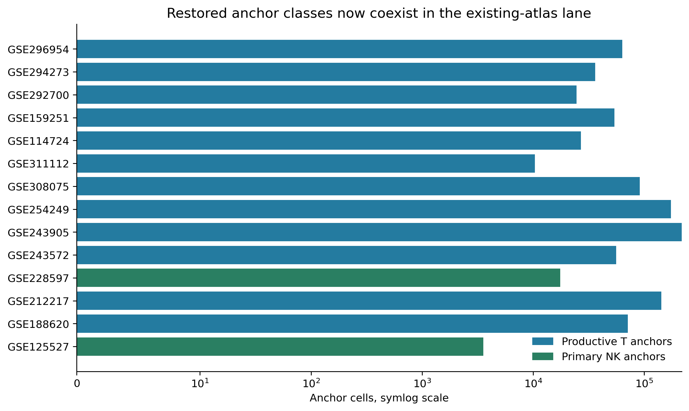
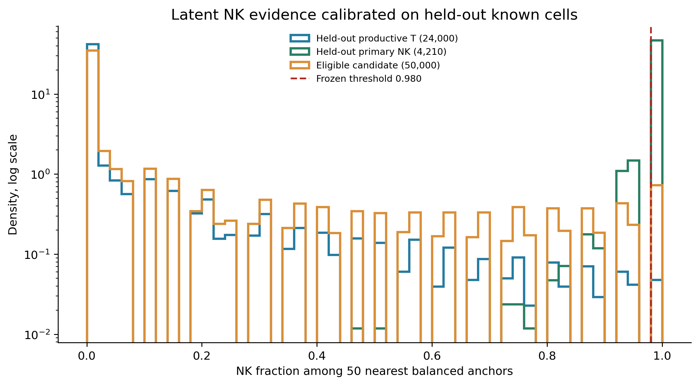
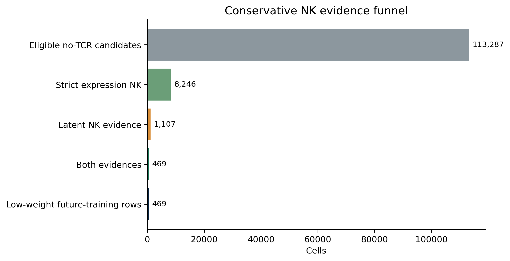
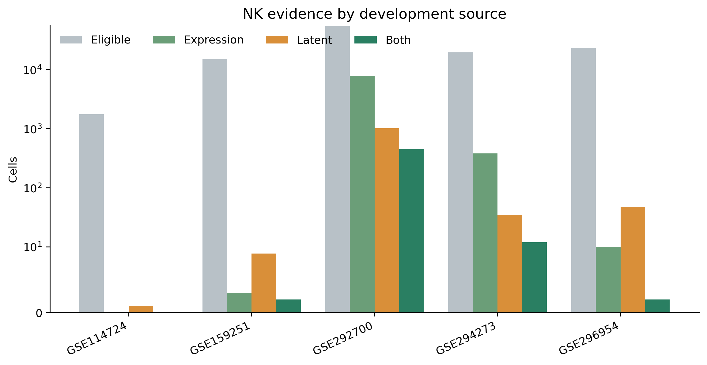
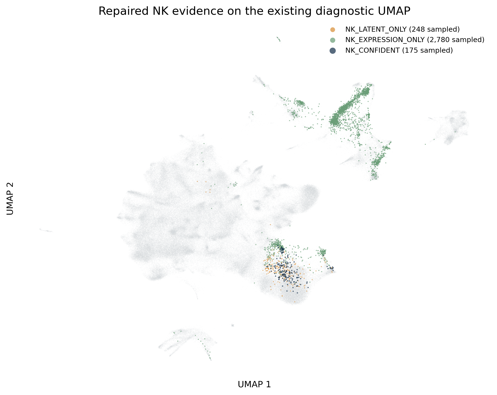
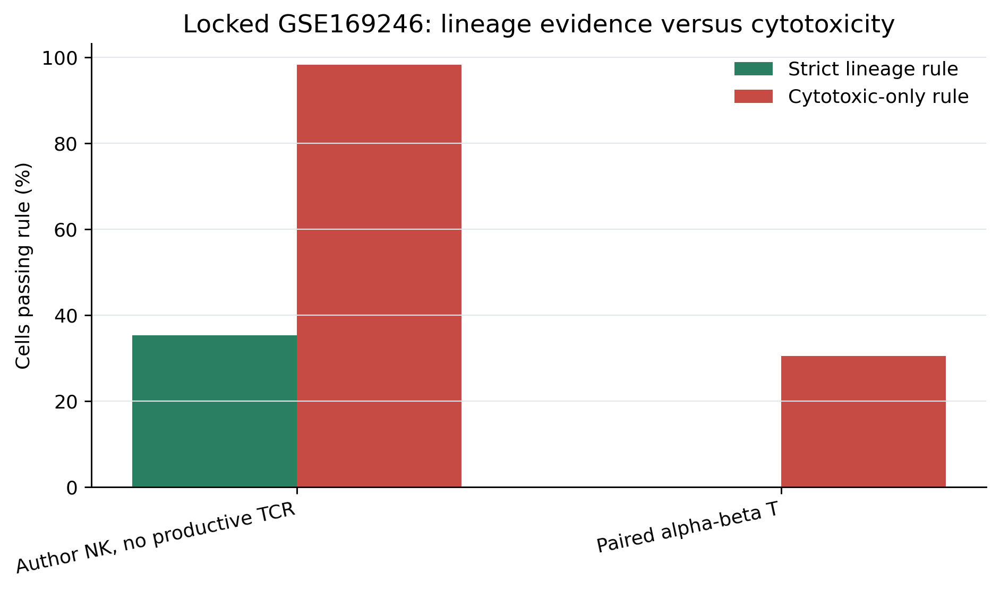
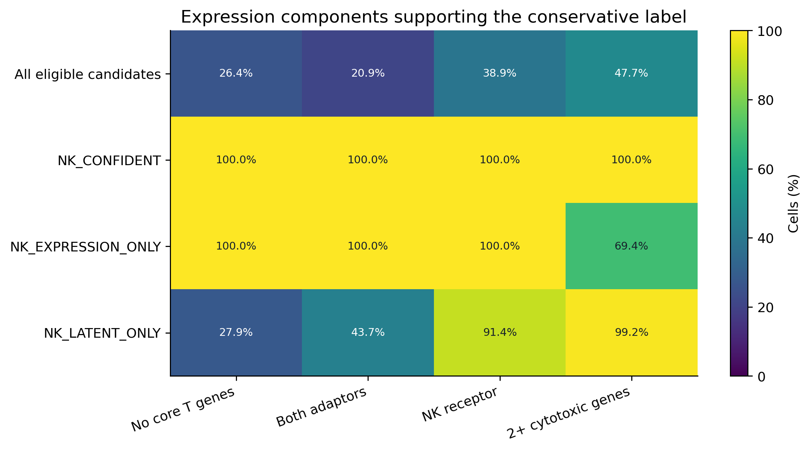

This read-only repair addresses the cohort-confounded pseudo-NK failure. It does not alter the canonical atlas, refit scVI, train gdTAI, or use locked cohorts for threshold selection.
The prior sidecar mapped no productive-T anchors into the existing-atlas lane even though its source object contains 762,280 cells with productive TRA or TRB evidence. Restoring these cells means NK and T anchors now coexist within the same old-atlas lane; productive-T anchors also remain present in every new cohort.

| source_gse_id | n_primary_nk | n_productive_t | input_lane |
|---|---|---|---|
| GSE114724 | 0 | 26893 | new_cohort |
| GSE125527 | 3547 | 0 | existing_atlas |
| GSE159251 | 0 | 53773 | new_cohort |
| GSE188620 | 0 | 71160 | existing_atlas |
| GSE212217 | 0 | 142604 | existing_atlas |
| GSE228597 | 17507 | 0 | existing_atlas |
| GSE243572 | 0 | 55770 | existing_atlas |
| GSE243905 | 0 | 217164 | existing_atlas |
| GSE254249 | 0 | 174010 | existing_atlas |
| GSE292700 | 0 | 24577 | new_cohort |
| GSE294273 | 0 | 36221 | new_cohort |
| GSE296954 | 0 | 63405 | new_cohort |
| GSE308075 | 0 | 91239 | existing_atlas |
| GSE311112 | 0 | 10333 | existing_atlas |
A development cell is called NK_CONFIDENT only when it has no productive TCR, no doublet flag, passes the latent nearest-anchor threshold, remains within the known-NK distance envelope, expresses both FCER1G and TYROBP plus at least one of KLRD1/NCR1/FCGR3A/KLRC1, and has no detected CD3D/CD3E/CD3G/TRAT1/BCL11B. Cytotoxic genes are audit-only and cannot establish NK identity.




| source_gse_id | n_candidates | n_expression | n_latent | n_confident | n_training | effective_training_weight | n_donors | n_libraries | expression_rate | latent_rate | confident_rate | training_fraction | effective_training_source_fraction |
|---|---|---|---|---|---|---|---|---|---|---|---|---|---|
| GSE114724 | 1759 | 0 | 1 | 0 | 0 | 0.000000 | 3 | 5 | 0.00% | 0.06% | 0.00% | 0.00% | 0.00% |
| GSE159251 | 15125 | 3 | 9 | 2 | 2 | 0.500000 | 4 | 9 | 0.02% | 0.06% | 0.01% | 0.01% | 3.75% |
| GSE292700 | 53677 | 7850 | 1015 | 453 | 453 | 9.333333 | 2 | 6 | 14.62% | 1.89% | 0.84% | 0.84% | 70.00% |
| GSE294273 | 19523 | 383 | 35 | 12 | 12 | 3.000000 | 12 | 12 | 1.96% | 0.18% | 0.06% | 0.06% | 22.50% |
| GSE296954 | 23203 | 10 | 47 | 2 | 2 | 0.500000 | 11 | 22 | 0.04% | 0.20% | 0.01% | 0.01% | 3.75% |
GSE169246 was not integrated and did not control any threshold. Its author-defined NK cells and paired alpha-beta T cells test only the fixed strict expression rule. The cytotoxic-only comparator demonstrates why NKG7/GNLY-like activity is not accepted as NK identity.

| group | n_cells | n_strict_expression_nk | strict_expression_nk_rate | n_cytotoxic_only | cytotoxic_only_rate |
|---|---|---|---|---|---|
| Author NK, no productive TCR | 7770 | 2744 | 35.32% | 7631 | 98.21% |
| Paired alpha-beta T | 54925 | 69 | 0.13% | 16699 | 30.40% |
| cohort_id | n_productive_t | strict_expression_nk_rate | cytotoxic_only_rate |
|---|---|---|---|
| GSE114724 | 26893 | 0.00% | 33.08% |
| GSE159251 | 53773 | 0.00% | 37.38% |
| GSE292700 | 24577 | 0.46% | 40.48% |
| GSE294273_GSE294274 | 36221 | 0.02% | 30.49% |
| GSE296954 | 63405 | 0.00% | 54.25% |

7030b28be885b85a4b24ce2223bb16f7c7288a29195f2512bf7bbba330791ccfc282b0d106caa3561b8f9c526c5dccfea522d610aad64e3ad99e53ea8863a26220260817exact_gpu_bruteNVIDIA A100 80GB PCIe; CPU fallback: no